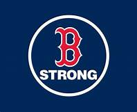
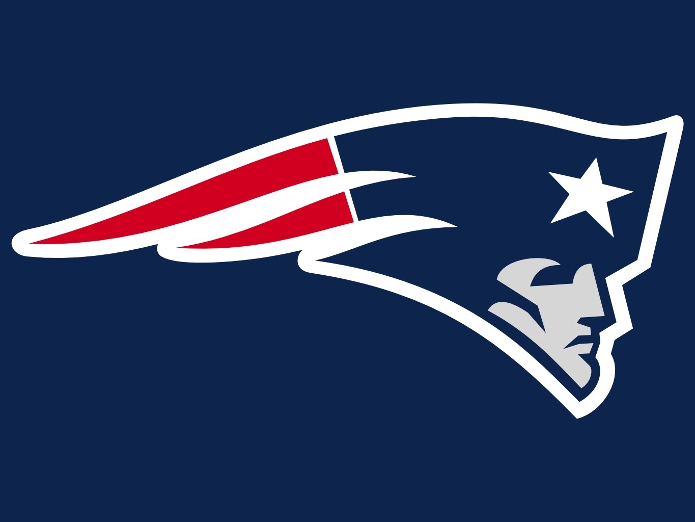

 
Sports have been a huge part of my life. Growing up I always was playing sports, mainly baseball, basketball, or football. When I was young these were the only sports I played. I played on teams and just with friends on the playground. As I got older however I grew apart from football, and got into playing soccer.
Growing up I always hated soccer and wanted nothing to do with it, but my eighth grade year I decided to try it out and actually ended up loving it. If it weren't for growing up playing baseball and loving baseball so much when I was younger, soccer would have been my favorite sport.
In high school I ended up only sticking with baseball and soccer, my two favorite sports and actually had quite an impact on both sports at my high shcool.
Links to:
[Welcome] [Why I Chose Umaine] [Killing Free Time] [Umaine Website]